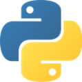
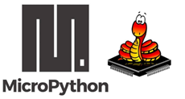

Python es un lenguaje de programación de alto nivel, interpretado y de propósito general, diseñado para ser legible y fácil de aprender. Su sintaxis clara y estructurada permite que incluso principiantes puedan desarrollar programas funcionales en poco tiempo. Python se utiliza en una gran variedad de áreas, incluyendo desarrollo web, ciencia de datos, inteligencia artificial, automatización e Internet de las Cosas (IoT).
Entre sus características más destacadas se encuentran:
- Sintaxis clara y simple: reduce la cantidad de código necesario para realizar una tarea.
- Tipado dinámico: no es necesario declarar explícitamente el tipo de una variable.
- Multiplataforma: funciona en Windows, macOS, Linux y otros sistemas.
- Extensible: permite incorporar bibliotecas y módulos para ampliar sus capacidades.
En Python, todo se basa en objetos: números, cadenas de texto, listas y otros elementos se manipulan mediante variables. Su diseño fomenta la escritura de código claro y ordenado, con una estructura que depende del uso correcto de indentación (espacios o tabulaciones al inicio de las líneas) en lugar de llaves {} u otros delimitadores.
MicroPython, por su parte, es una implementación ligera de Python especialmente optimizada para ejecutarse en microcontroladores y dispositivos con recursos limitados, como el ESP32. Mantiene gran parte de la sintaxis y funcionalidades básicas de Python, pero está adaptado para trabajar con hardware directamente (pines, protocolos de comunicación, temporizadores, etc.).
Diferencias clave entre Python y MicroPython:
- Alcance: Python completo se usa en entornos con mayores recursos, MicroPython está pensado para sistemas embebidos.
- Bibliotecas: MicroPython incluye módulos específicos para control de hardware (machine, network, etc.), pero no incorpora todas las librerías estándar de Python.
- Memoria y velocidad: MicroPython está optimizado para ocupar poca memoria y ejecutarse con rapidez en hardware reducido.
En este curso, utilizaremos Thonny IDE como entorno de desarrollo, lo que nos permitirá:
- Escribir y ejecutar programas directamente en el ESP32.
- Guardar scripts en el dispositivo para funcionamiento autónomo.
- Probar fragmentos de código en consola interactiva (REPL).
Comprender las bases de Python y cómo se adaptan en MicroPython es esencial para aprovechar el ESP32 en proyectos de control, monitoreo e IoT.